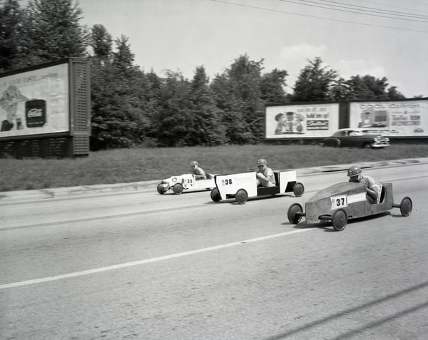

Recipe for a Soap Box Derby
By Mary Lee Hahn, 2015
Home

Description
I have never been to a Soap Box Derby. I've just seen it in a movie or two.
So I have no idea what this person is talking about, but I just thought it was neat.
Shoutout to all the poets around the world!!!
Ingredients
- the Great Depression
- some memories
- some snow
- some hills
- some sleds
- some thrills
- a group of camaraderie
- 2 cups of intuitive engineering
- a box of scraps of wood and salvaged wheels
- a few long hot lazy summer days
- a chunk of gravity
Steps